컴퓨터응용가공산업기사 (2012-03-04 기출문제)
1과목: 기계가공법 및 안전관리
1. 보통 선반에서 테이퍼나사를 가공하고자 할 때 절삭방법으로 틀린 것은?
- 바이트의 높이는 공작물의 중심선보다 높게 설치하는 것이 편리하다.
- 심압대를 편위시켜 절삭하면 편리하다.
- 테이퍼 절삭장치를 사용하면 편리하다.
- 바이트는 테이퍼부에 직각이 되도록 고정한다.
(정답률: 76%)

2. 절삭유제에 관한 설명으로 틀린 것은?
- 극압유는 절삭공구가 고온, 고압상태에서 말찰을 받을 때 사용한다.
- 수용성 절삭유제는 점성이 낮으며, 윤활작용은 좋으나 냉각작용이 좋지 못하다.
- 절삭유제는 수용성과 불수용성, 그리고 고체윤활제로 분류한다.
- 불수용성 절삭유제는 광물성인 등유, 경유, 스핀들유, 기계유 등이 있으며 그대로 또는 혼합하여 사용한다.
(정답률: 76%)
3. 다음 연삭숫돌의 입자 중 주철이나 칠드주물과 같이 경하고 취성이 많은 재료의 연삭에 적합한 것은?
- A입자
- B입자
- WA입자
- C입자
(정답률: 62%)
4. 밀링 머신에 사용되는 부속장치가 아닌 것은?
- 아버
- 어댑터
- 바이스
- 방진구
(정답률: 89%)
5. 텔레 스코핑 게이지로 측정할 수 있는 것은?
- 진원도 측정
- 안지름 측정
- 높이 측정
- 깊이 측정
(정답률: 64%)
6. 밀링분할대로 3° 의 각도를 분할하는데, 분할 핸들을 어떻게 조작하면 되는가? (단, 브라운 샤프형 No.1의 18열을 사용한다.)
- 5구멍씩 이동
- 6구멍씩 이동
- 7구멍씩 이동
- 8구멍씩 이동
(정답률: 80%)
7. 초경합금의 사용선택 기준을 표시하는 내용 중 ISO 규격에 해당되지 않는 공구는?
- M계열
- N계열
- K계열
- P계열
(정답률: 54%)
8. 선반의 나사절삭 작업 시 나사의 각도를 정확히 맞추기 위하여 사용되는 것은?
- 플러그 게이지
- 나사 피치 게이지
- 한계 게이지
- 센터 게이지
(정답률: 55%)
9. 전기스위치를 취급할 때 틀린 것은?
- 정전 시에는 반드시 끈다.
- 스위치가 습한 곳에 설비되지 않도록 한다.
- 기계운전 시 작업자에게 연락 후 시동한다.
- 스위치를 뺄 때는 부하를 크게 한다.
(정답률: 90%)
10. 스패너 작업 시 안전사항으로 옳은 것은?
- 너트의 머리치수보다 약간 큰 스패너를 사용한다.
- 꼭 조일 때는 스패너 자루에 파이프를 끼워 사용한다.
- 고정 조(jaw)에 힘이 많이 걸리는 방향에서 사용한다.
- 너트를 조일 때는 스패너를 깊게 물려서 약간씩 미는 식으로 조인다.
(정답률: 55%)
11. 시준기와 망원경을 조합한 것으로 미소 각도를 측정할 수 있는 광학적 각도 측정기는?
- 베벨 각도기
- 오토 콜리메이터
- 광학식 각도기
- 광학식 클리노미터
(정답률: 68%)
12. 1인치에 4산의 리드 스크루를 가진 선반으로 피치4mm의 나사를 깎고자 할 때, 변환 기어 이수를 구하면? (단, A는 주축기어의 이수, B는 리드스크루의 이수이다.)
- A:80, B:137
- A:120, B:127
- A:40, B:127
- A:80, B:127
(정답률: 45%)
13. 보통선반작업시의 안전사항으로 올바른 것은?
- 칩에 의한 상처를 방지하기 위해 소매가 긴 작업복과 장갑을 끼도록 한다.
- 칩이 공작물에 걸려 회전할 때는 즉시 기계를 정지 시키고 칩을 제거한다.
- 거친 절삭일 경우는 회전 중에 측정한다.
- 측정 공구는 주축대 위나 베드 위에 놓고 사용한다.
(정답률: 81%)
14. CNC 공작기계 서보기구의 제어방식에서 틀린 것은?
- 단일회로
- 개방회로
- 폐쇄회로
- 반 폐쇄회로
(정답률: 84%)
15. 테이블의 이동거리가 전후 300mm, 좌우 850mm, 상하 450mm인 니형 밀링머신의 호칭번호로 옳은 것은?
- 1호
- 2호
- 3호
- 4호
(정답률: 65%)
16. 다음은 정밀입자 가공을 나타낸 것이다. 이에 속하지 않는 것은?
- 슈퍼 피니싱
- 배럴 가공
- 호닝
- 래핑
(정답률: 62%)
17. 기어가공에서 창성에 의한 절삭법이 아닌 것은?
- 형판에 의한 방법
- 래크 커터에 의한 방법
- 호브에 의한 방법
- 피니언 커터에 의한 방법
(정답률: 69%)
18. 다음 나사산의 각도측정 방법으로 틀린 것은?
- 공구 현미경에 의한 방법
- 나사 마이크로미터에 의한 방법
- 투영기에 의한 방법
- 만능 측정현미경에 의한 방법
(정답률: 55%)
19. 드릴의 날끝각이 118°로 되어 있으면서도 날끝의 좌우 길이가 다르다면 날끝의 좌우 길이가 같을 때보다 가공 후의 구멍치수 변화는?
- 더 커진다.
- 변함없다.
- 타원형이 된다.
- 더 작아진다.
(정답률: 75%)
20. 연삭숫돌에서 눈메움 현상의 발생 원인이 아닌 것은?
- 숫돌의 원주 속도가 느린 경우
- 숫돌의 입자가 너무 큰 경우
- 연삭 깊이가 큰 경우
- 조직이 너무 치밀한 경우
(정답률: 47%)
2과목: 기계설계 및 기계재료
21. Fe-C 평형상태도에서 공석강의 탄소 함유량은 얼마정도인가?
- 6.67%
- 4.3%
- 2.11%
- 0.77%
(정답률: 62%)
22. 탄소강에서 적열메짐을 방지하고, 주조성과 담금질 효과를 향상시키기 위하여 첨가하는 원소는?
- 황(S)
- 인(P)
- 규소(Si)
- 망간(Mn)
(정답률: 54%)
23. 공구재료로써 구비해야 할 조건들 중 틀린 것은?
- 내마멸성과 강인성이 클 것
- 가열에 의한 경도 변화가 클 것
- 상온 및 고온에서 경도가 높을 것.
- 열처리와 공작이 용이 할 것
(정답률: 81%)
24. 순철의 성질을 설명한 것으로 틀린 것은?
- 융점은 1539℃ 정도이다.
- 비중은 7.86 정도이다.
- 인장강도가 20~28 kgf/mm2이다.
- 연신율은 12~14%이다.
(정답률: 54%)
25. 단일금속의 결정에 비해 고용체 상태에 있는 금속의 기계적 성질의 변화를 나타낸 것 중 틀린 것은?
- 변형증가
- 연성증가
- 강도증가
- 탄성계수증가
(정답률: 38%)
26. 금속재료가 일정한 온도 영역과 변형속도의 영역에서 유리질처럼 늘어나는 특수한 현상은?
- 형상기억
- 초소성
- 초탄성
- 초전도
(정답률: 66%)
27. 오일리스 베어링(oilless bearing)의 특징을 설명한 것으로 틀린 것은?
- 다공질이므로 강인성이 높다.
- 기름 보급이 곤란한 곳에 적당하다.
- 너무 큰 하중이나 고속 회전부에는 부적당하다.
- 대부분 분말 야금법으로 제조한다.
(정답률: 48%)
28. 섬유강화 복합재료의 일반적인 성질이 아닌 것은?
- 높은 강도와 강성
- 높은 감쇄 특성
- 높은 열팽창계수
- 이방성
(정답률: 42%)
29. 다음 중 뜨임의 목적이 아닌 것은?
- 탄화물의 고용 강화
- 인성 부여
- 담금질 후 응력 제거
- 내마모성의 향상
(정답률: 62%)
30. 마그네슘(Mg)에 대한 설명으로 틀린 것은?
- 비중은 상온에서 1.74 이다.
- 열전도율과 전기전도율은 Cu, Al보다 낮다.
- 해수에 대해 내식성이 풍부하다.
- 절삭성이 우수하다.
(정답률: 74%)
31. 판의 두께 12mm, 리벳의 지름 19mm, 피치 50mm인 1줄 겹치기 리벳 이음을 하고자 한다. 한 피치 당 12.26kN의 하중이 작용할 때 생기는 인장응력과 리벳이음의 판의 효율은 각각 얼마인가?
- 32.96MPa, 76%
- 32.96MPa, 62%
- 16.98MPa, 76%
- 16.98MPa, 62%
(정답률: 45%)
32. 그림과 같은 스프링 장치에서 W=150N의 하중을 매달면 처짐은 몇 cm 가 되는가? (단, 스프링 상수 k1 = 20N/cm, k2 = 40N/cm이다.)(오류 신고가 접수된 문제입니다. 반드시 정답과 해설을 확인하시기 바랍니다.)
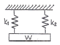
- 1.25
- 2.50
- 5.68
- 11.25
(정답률: 61%)
33. 단식 블록 브레이크에서 브레이크 드럼의 지름이 450mm, 블록을 브레이크 드럼에 밀 어 붙이는 힘이 1.96KN인 겨우 블레이크 드럼에 작용하는 제동 토크는 몇 N∙m 인가? (단, 마찰계수는 0.2이다.)
- 52.4
- 88.2
- 176.4
- 441.
(정답률: 46%)
34. 직경 500mm인 마찰차가 350 rpm의 회전수로 동력을 전달한다. 이 때 바퀴를 밀어붙이는 힘이 1.96kN 일 때 몇 kW의 동력을 전달 할 수 있는가? (단, 접촉부 마찰계수는 0.35로 하고, 미끌림은 없다고 가정한다.)
- 4.5
- 5.1
- 5.7
- 6.3
(정답률: 24%)
35. 800rpm으로 회전하고 1kN의 하중을 받고 있는 단열 레이디얼 볼베어링의 수명이 20000시간 이라 하면, 다음 중 어느 베어링을 사용하는 것이 가장 적당한가? (단, C는 기본 동정격하중이다.)
- 6202 (C=6kN)
- 6203 (C=8kN)
- 62⑤ (C=10kN)
- 6206 (C=15kN)
(정답률: 53%)
36. 다음 중 다른 전동방식과 비교하여 체인전동방식의 일반적인 특징에 해당하지 않는 것은?
- 미끄럼이 없는 일정한 속도비를 얻을 수 있다.
- 초장력이 필요 없으므로 베어링의 마멸이 적다.
- 고속회전에 적당하다.
- 전동 효율이 95% 이상으로 좋다.
(정답률: 53%)
37. 압력각이 20° 인 표준 스퍼기어에서 언더컷을 방지하기 위한 이론적인 최소 잇 수는 몇 개 인가?
- 17
- 25
- 30
- 32
(정답률: 54%)
38. M22볼트(골지름 19.294 mm)가 그림과 같이 2장의 강판을 고정하고 있다. 체결 볼트의 허용전단응력이 39.25MPa라 하면 최대 몇 kN까지의 하중을 받을 수 있는가?
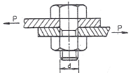
- 3.21
- 7.54
- 11.48
- 22.96
(정답률: 48%)
39. 중공축의 안지름과 바깥지름의 비를 x(＜1)라 할 때, 동일한 비틀림 모멘트에 대해서 동일한 비틀림 응력이 발생하기 위한 중실축 지름(d)과 중공축의 바깥지름(d2)의 비 d2/d는? (단, 중실축과 중공축의 재질은 같다.)
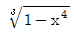
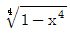
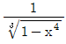
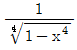
(정답률: 48%)
40. 인장 하중과 압축 하중이 교대로 반복하여 작용하는 하중으로 크기와 방향이 동시에 변화하는 하중은?
- 반복하중
- 교번하중
- 충격하중
- 전단하중
(정답률: 74%)
3과목: 컴퓨터응용가공
41. 가벼우면서도 적은 부피를 가지는 평판 디스플레이의 종류가 아닌 것은?
- 플라즈마 판 디스플레이
- 음극선관(CRT) 디스플레이
- 액정 디스플레이
- 전자 발광 디스플레이
(정답률: 78%)
42. 베지어(Bezier) 곡선의 특징을 기술한 것 중 틀린것은?
- 첫 조정점과 마지막 조정점(control point)을 지나도록 한다.
- 중간에 있는 조정점들은 곡선의 진행경로를 결정한다.
- 1개의 조정점 변화는 곡선 전체에 영향을 미친다.
- n개의 조정점에 의해서 정의되는 곡선은 (n+1)차이다.
(정답률: 69%)
43. CAD/CAM시스템의 구축을 통하여 얻는 이점으로 틀린 것은?
- 제품의 품질 향상과 안정화
- 설계기간의 단축
- 설계와 생산의 표준화
- 전문 인력 확보 용이
(정답률: 79%)
44. 다음 중에서 분말형태의 재료에 레이저를 조사하여 소결하여 적층하는 RP(Rapid Prototyping) 공정은?
- SLA(Stereo Lithograpic Apparatus)
- LOM(Laminated-Object Manufacturing)
- SLS(Selective Laser Sintering)
- FDM(Fused Deposition Modeling)
(정답률: 64%)
45. 서피스 모델 (surface model)에 대한 설명으로 가장 관계가 먼 것은?
- 은선 제거가 가능하다.
- 시각 모델을 통한 심미적 평가가 가능하다.
- NC data를 생성할 수가 있다.
- 응력 해석용 모델로 사용할 수 있다.
(정답률: 68%)
46. 은선 제거법에서 면 위의 점에서 법선벡터를 N, 면위의 점으로부터 관찰자 눈으로 향하는 벡터를 M 이라고 할 때, 관찰자의 눈에 보이지 않는 면에 대한표현으로 알맞은 것은?
- Mㆍ N ＞ 0
- Mㆍ N ＜ 0
- Mㆍ N = 0
- M = N
(정답률: 68%)
47. Thx 방향으로 2배 축소 y 방향으로 2배 확대를 나타내는 변환 행렬 Th는?
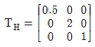
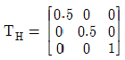
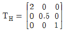
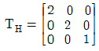
(정답률: 60%)
48. 다음 중 은면 제거 (hidden surface removal) 가 가능하지 않은 모델은?
- Wirefreame model
- Surface model
- B-rep model
- CSG model
(정답률: 79%)
49. 현재 공구 위치 (0 , 0)에서 다음 위치 (40 ,30) mm 까지 공구를 10mm/s 의 속도로 이송하기 위해 x 축 모터에 보내야 할 펄스의 속도는? (단 BLU = 0.001 mm 이다)
- 3000개 /sec
- 4000개 /sec
- 6000개 /sec
- 8000개 /sec
(정답률: 43%)
50. 조립체 모델링에서 동일한 부품의 중복해서(copy) 사용할 경우 조립체 모델링의 파일크기가 크게 증가하게 된다. 중복되는 부품으로 인한 조립체의 파일 크기를 줄이기 위해서, CAD 시스템은 부품에 대한 링크 (link) 정보만을 조립체에 포함시킨다. 이와 같은 방법을 무엇이라 하는가?
- 인스턴스 (Instance)
- 이력 (History)
- 특징형상 (Feature)
- 만남조건 (Mating condition)
(정답률: 67%)
51. 3차원 솔리드 모델링 형상 표현방법이 아닌 것은?
- 기본 요소인 구 , 육면체, 실린더 생성
- 프리미티브에 의한 집합연산
- 곡선의 이동에 의한 생성
- 면의 회전체에 의한 생성
(정답률: 54%)
52. 자유 곡면 형상의 절삭에 가장 많이 사용되는 절삭 가공은?
- Side milling
- Face milling
- Ball - end milling
- Turning
(정답률: 81%)
53. CAD/CAM 시스템을 개발하여 공급하는 회사들은 세계적으로 여러 군데가 있다. 이러한 여러 가지 CAD/CAM 시스템을 사용하다 보면 자료를 각각의 회사별로 공유하여 활용하는데 많은 문제점을 표출하게 된다. 이러한 문제점들을 해결하기 위해서 서로 다른 그래픽 자료를 (interface) 할 수 있는 규격의 종류가 아닌 것은?
- IGES
- DIN
- DXF
- STEP
(정답률: 64%)
54. 머시닝센터로 가공하기 위한 일반적인 CAM/CAM의 순서로 알맞은 것은?
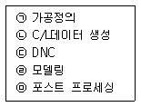
- ㉠→㉡→㉢→㉣→㉤
- ㉣→㉡→㉢→㉠→㉤
- ㉠→㉣→㉤→㉡→㉢
- ㉣→㉠→㉡→㉤→㉢
(정답률: 69%)
55. NC 가공 경로 계획에서 CL-cartesian 방식에 대한 설명으로 틀린 것은?
- 곡면의 매개변수가 일정한 값들의 위치를 따라가면서 경로를 생성한다.
- CC-Cartesian 방식에 비하여 수치적 계산이 복잡하다.
- 곡면 가공시
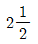
축 NC 기계에서도 사용 가능한 공구 경로를 생성 할 수 있다. - CL점이 이루는 곡면을 평면으로 절단하여 공구 경로를 생성한다.
(정답률: 28%)
56. 비유리 (non-rational) 곡면으로도 정확하게 표현할 수 있는 것은?
- 평면 (plane)
- 회전 곡면 (revolved surface)
- 구면 (sphere)
- 실린더 곡면 (cylinder surface)
(정답률: 50%)
57. 일반적인 CAD 시스템에서 원 (Circle)를 정의 하는 방법이 아닌 것은?
- 중심과 반지름으로 표시
- 원주상의 3개의 점으로 표시
- 한 점과 수평선과의 각도로 표시
- 3개의 직선에 접하는 곡선
(정답률: 61%)
58. 주어진 데이터 값을 이용하는 보간(interpolation) 방법이 아닌 것은?
- Lagrange 다항식
- 3차 스플라인
- 절점 삽입(knot insertion)
- 매개변수 3차식
(정답률: 48%)
59. 공학적 해석(부피, 무게중심, 관성모멘트 등의 계산) 을 적용할 때 사용하는 가장 적합한 모델은?
- 솔리드모델
- 서피스 모델
- 와이어프레임 모델
- 데이터 모델
(정답률: 84%)
60. 다음 중 지정된 모든 조정점을 반드시 통과하도록 고안된 곡선은?
- Bezier
- B-spline
- spline
- NURBS
(정답률: 55%)
4과목: 기계제도 및 CNC공작법
61. 그림과 같은 도면에서 치수 20 부분의 굵은 1점 쇄선 표시가 의미하는 것으로 가장 적합한 설명은?
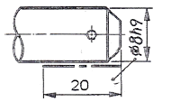
- 공차가 ø8h9 되게 축 전체 길이부분에 필요하다.
- 공차 ø8h9 부분은 축 길이 20 되는 곳 까지만 필요하다.
- 치수 20 부분을 제외하고 나머지 부분은 공차가 ø8h9 되게 가공한다.
- 공차가 ø8h9 보다 약간 적게 한다.
(정답률: 72%)
62. 단면도의 절단된 부분을 나타내는 해칭선을 그리는 선은?
- 가는 2점 쇄선
- 가는 실선
- 가는 파선
- 가는 1점 쇄선
(정답률: 68%)
63. 다음 나사의 도시법에 관한 설명 중 옳은 것은?
- 암나사의 골지름은 가는 실선으로 표현한다.
- 암나사의 안지름은 가는 실선으로 표현한다.
- 수나사의 바깥지름은 가는 실선으로 표현한다.
- 수나사의 골지름은 굵은 실선으로 표현한다.
(정답률: 44%)
64. 다음 중 가공 방법과 그 기호의 관계가 틀린 것은?
- 호닝 가공 : GH
- 래핑 : FL
- 스크레이핑 : FS
- 줄 다듬질 : FB
(정답률: 77%)
65. <보기>와 같이 정면도와 평면도가 표시될 때 우측면도가 될 수 없는 것은?
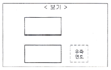
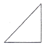
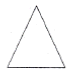
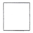
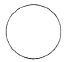
(정답률: 71%)
66. 그림과 같은 도면에서 “가”부분에 들어갈 가장 적절한 기하공차 기호는?
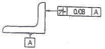
- //
- ⊥
- ∠
- ⌖
(정답률: 82%)
67. KS 재료기호 중 열간압연 연강판 및 강대에서 도로 잉용에 해당하는 재료기호는?(오류 신고가 접수된 문제입니다. 반드시 정답과 해설을 확인하시기 바랍니다.)
- SNCD
- SPCD
- SPHD
- SHPD
(정답률: 63%)
68. 다음 중 치수 공차가 가장 작은 것은?
- 50±0.01
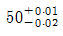
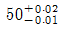
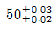
(정답률: 71%)
69. 표면의 결 도시방법에서 가공에 의한 커터 줄무늬 방향이 기입한 면의 중심에 대하여 대략 동심원 모양 일 때 기호는?
- X
- M
- C
- R
(정답률: 79%)
70. 기계제도에서 사용하는 기호 중 치수 숫자와 병기하여 사용되지 않은 것은?
- SR
- □
- C
- ■
(정답률: 77%)
71. 다음 CNC선반 프로그램에서 직경이 60mm인 지점에서의 주축 회전수는 몇 rpm인가?
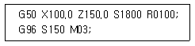
- 1800
- 150
- 796
- 1296
(정답률: 69%)
72. 다음 중 공구의 이송을 일시 정지시키는 프로그램으로 틀린 것은?
- G04 X2.5
- G04 U2.5
- G04 P2.5
- G04 P2500
(정답률: 73%)
73. 위치 검출을 서브모터 축에서 하기도 하고 볼 스크루의 회전 각도로 검출하기도 하는 방법을 채택한 그림과 같은 서보기구는? (문제 복원 오류로 그림이 없습니다. 정확한 그림 내용을 아시는분 께서는 오류신고 또는 게시판에 작성 부탁드립니다.)
- 반폐쇄회로 방식
- 폐쇄회로 방식
- 하이브리드 서보방식
- 개방회로 방식
(정답률: 64%)
74. 머시닝센터의 작업 전 육안검사 사항이 아닌 것은?
- 공기압은 충분히 유지하고 있는가 확인
- 윤활유 탱크에 윤활유 양은 적당한가 확인
- 전기적 회로는 정상 상태인가 확인
- 공작물은 정확히 물려져 있는가 확인
(정답률: 79%)
75. 머시닝센터에서 직경이 60mm인 원형 펀치가 되도록 직경이 16mm인 엔드밀로 가공하였다. 가공 후 측정 하였더니 직경이 61mm가 되었다. 기존의 공구반 경 보정번호에는 8mm로 입력되었다면 이 값을 얼마로 수정해야 하는가?
- 7
- 7.5
- 8.5
- 9
(정답률: 47%)
76. 머시닝센터에서 XY 평면을 설정하는 코드는?
- G17
- G18
- G19
- G20
(정답률: 78%)
77. 일반적으로 방전가공이 불가능한 재료는?
- 아크릴
- 탄소공구강
- 고속도강
- 초경합금
(정답률: 83%)
78. CNC선반에서 바이트의 날끝(nose)반경을 R, 이송을 f라 하면 가공면의 이론적인 최대 높이(Hmax)를 나타내는 식은?
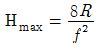
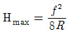
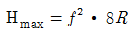
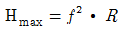
(정답률: 67%)
79. CNC공작기계에서 공구의 이송속도를 제어하는 코드는?
- . G코드
- F코드
- S코드
- M코드
(정답률: 78%)
80. CNC선반의 구성은 본체와 CNC장치로 구분되는데 기능별로 보아 CNC장치에 해당되는 것은?
- 공구대
- 척
- 위치검출기
- 헤드스톡
(정답률: 69%)